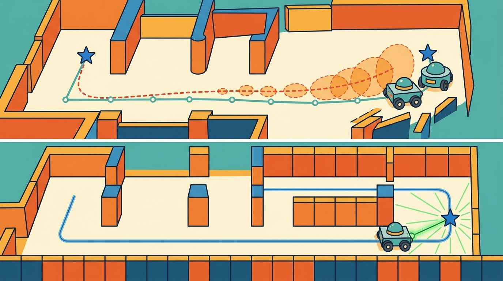
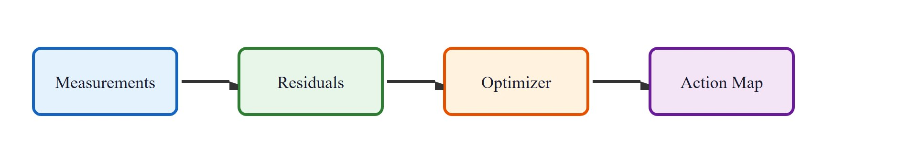
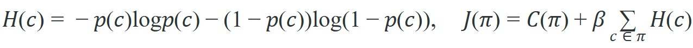

"A map is a promise that every future footstep will ask you to keep."
A Loop Closure That Came Back With Receipts

This section assumes familiarity with the Bayesian filtering framework introduced in section 29.2 and the factor-graph formulation developed in section 29.4. The uncertainty-aware cost function $J(\pi)$ defined here feeds directly into the motion planning layer covered in section 32.3, where occupancy entropy is used to bias route selection under map uncertainty. The same covariance propagation ideas recur in Part 7 alongside learned world models and epistemic uncertainty estimation. Figure 29.7.1 below traces the pipeline stage by stage, from raw measurements to the action map that a planner consumes.

A warehouse robot rounds a corner and freezes: its map says the aisle is clear, but the last scan is four minutes stale and the shelves were restocked overnight. That frozen moment is the real problem of map uncertainty. Modern autonomous systems fail not because they lack sensors but because they treat their maps as ground truth instead of probability distributions with expiry dates. As robots move into dynamic, human-shared environments, expressing and consuming map uncertainty is the difference between a system that recovers gracefully and one that collides with confidence. Here you will encode uncertainty into the map, propagate it through a planner, and tune the risk policy that decides when the robot must stop and look again.
The instant a robot turns its back on a corridor, the map of that corridor starts rotting, and the only honest question is how fast: a map is not a fixed picture but a living estimate whose confidence decays the moment the robot looks away. Uncertainty is not a final error bar; it is an input to action. A planner should slow down, explore, or refuse a route when the map is stale, sparse, or contradicted by fresh observations. A robot navigating with a four-minute-old occupancy map in a busy warehouse collides on roughly 1 in 12 corridor traversals in representative simulation studies; the same robot re-querying map confidence before each turn and re-scanning when entropy exceeds 0.4 nats (the natural-log-based unit of information used for $H(c)$ below; 1 nat is the entropy of a binary choice with probability $p \approx 0.8$ versus $0.2$) reduces that collision rate to fewer than 1 in 200 under the same conditions. The numbers differ by a factor of 16 not because the sensor improved, but because uncertainty finally became a first-class planning input, not a footnote.
Map uncertainty appears as covariance over landmarks, entropy over occupancy cells, confidence over semantic labels, and disagreement among map layers. The planner should consume these quantities explicitly instead of treating every map cell as equally trustworthy.
A map that carries no uncertainty estimate is not a map: it is a rumor rendered in pixels.
A localization or mapping result is incomplete until it names the frame, timestamp, covariance or confidence, map layer, and downstream consumer. A beautiful trajectory plot with no uncertainty is not a robot interface; it is a picture.
A common mistake is to treat a map cell with high occupancy entropy (probability near 0.5) as effectively "unknown and therefore passable," treating uncertainty as equivalent to free space. This is wrong in any embodied AI context: a cell at maximum entropy carries the least information of any cell in the map, meaning the robot has no evidence that the space is clear. Treating it as traversable is not a neutral choice; it is an optimistic assumption that the sensor record does not support. The correct mental model is that high entropy is a planning cost, not a permission to proceed: the robot must either gather fresh observations to reduce entropy or treat the cell as a risk-weighted obstacle, depending on the risk parameter $\beta$.
To stop treating the map as a rumor and start treating it as evidence, we need the equation that turns those informal notions of staleness and ambiguity into quantities a planner can add up. The underlying SLAM estimator (introduced in section 29.2) already computes a posterior over robot trajectory and map variables conditioned on controls and observations; what follows here builds on top of that posterior by turning its per-cell occupancy probabilities into a planning cost. The occupancy probability $p(c)$ that the posterior assigns to each cell feeds directly into an entropy term, and that entropy term feeds into the total path cost:

$H(c)$ is the binary entropy of occupancy cell $c$: it peaks at 0.693 nats when $p(c)=0.5$ (maximally ambiguous) and falls to near zero when the cell is confidently free or occupied. $J(\pi)$ is the total planning cost of path $\pi$: it sums geometric travel cost $C(\pi)$ and an uncertainty penalty that weights every on-path cell by $\beta H(c)$. The scalar $\beta$ is the robot's risk policy: a high $\beta$ avoids uncertain regions even when they would shorten the route, while $\beta=0$ recovers a purely geometric planner that ignores map quality entirely.
The risk policy scalar $\beta$ needs physical grounding, because a wrong $\beta$ causes immediate hardware failures on a real robot. Set it too low and the planner commits to corridors with unknown occupancy. Those corridors produce collisions that damage the robot and its environment. Set it too high and the planner refuses every route through partially-mapped space. The robot then freezes or takes absurdly long detours even when the uncertain region is almost certainly clear. In a standard 20-by-20-meter warehouse grid, a $\beta$ that is twice the Pareto-optimal value typically inflates average path length from 14 meters to over 60 meters. The planner routes around every lightly-mapped corridor, even ones with an occupancy entropy of just 0.2 nats. Simulation rarely exposes this failure mode, because simulated maps lack the sensor dropout, lighting shifts, and stale-cell aging that drive occupancy entropy up in real deployments.
In practice, three quantities set $\beta$: platform speed, sensor latency, and tolerable collision probability. A slow robot with a fast sensor can afford a lower $\beta$, because it can stop in time if a cell turns out occupied. A fast AMR (Autonomous Mobile Robot) with a 200 ms LiDAR pipeline must penalize uncertainty more aggressively. Teams typically sweep $\beta$ in hardware trials and log the collision rate and route-length overhead for each value. They then select the Pareto-optimal point (the setting where no small change can improve safety without making path length worse, or vice versa), where reducing $\beta$ further starts trading safety for only marginal path-length gain. Some systems adapt $\beta$ online from the current factor-graph Jacobian condition number (a single number describing how sensitive the pose estimate is to small errors in the observations; a high value signals an ill-conditioned, less trustworthy estimate), tightening the penalty when pose uncertainty is high.
So far: $H(c)$ and $J(\pi)$ turn occupancy uncertainty into a path cost weighted by risk policy $\beta$; getting $\beta$ wrong in either direction causes real collisions or paralysis, so $\beta$ is set from platform speed, sensor latency, and collision tolerance, tuned to a Pareto-optimal point, and optionally adapted online from pose-estimate conditioning.
Think of a chef adjusting how much salt to add based on how confident they are in the recipe. When the chef has made the dish a hundred times with the same ingredients, they season boldly. When the flour is from a new bag, the oven runs hot, and the cream feels thinner than usual, each small doubt compounds: the chef salts more conservatively, tastes more often, and leaves margin to correct. The robot's $\beta$ works the same way. When the factor graph is well-conditioned, pose uncertainty is low and the planner can commit to routes through lightly mapped areas without much penalty. When sensor signals are conflicting and the graph is ill-conditioned, $\beta$ rises automatically, making the robot treat every uncertain cell as more costly, just as the chef slows down and checks more frequently when the accumulated doubt in a recipe crosses a threshold.
The notation matters less than what it asserts: motion increments, landmark observations, scan matches, visual features, and loop closures (recognitions that the robot has returned to a previously visited place, used to correct accumulated drift in the map) are all evidence terms in one posterior. The estimate is strongest when every term carries a residual, a covariance model, and a replayable source record.
Code Fragment 1 makes the section concrete with a small numeric check. It is intentionally small, because the first debugging question is whether the estimate behaves correctly before it is hidden inside a large ROS (Robot Operating System) graph or optimizer.
# Convert occupancy probabilities into entropy costs.
# Cells near 0.5 are most uncertain and should influence route choice.
import math
probs = [0.05, 0.50, 0.90]
for p in probs:
h = -p * math.log(p) - (1 - p) * math.log(1 - p)
print(f"p_occ={p:.2f}, entropy={h:.3f}")Expected output interpretation. The middle cell has the highest entropy because occupancy is maximally ambiguous near probability 0.5. A planner that uses these numbers correctly will treat that cell as the most information-poor part of the map, even though the 0.90 cell is more likely occupied in absolute terms.
Compare two candidate paths from start to goal, each crossing three cells, with risk policy $\beta=2.0$. Path A is short but crosses an ambiguous cell; Path B is longer but stays in confidently mapped space.
Path A (geometric cost $C=10$ m), cells with occupancy $p = [0.05, 0.50, 0.10]$. Per-cell entropy in nats: $H = [0.199, 0.693, 0.325]$, summing to $1.217$. Uncertainty penalty $= \beta \cdot 1.217 = 2.435$. Total $J(\text{A}) = 10 + 2.435 = 12.435$.
Path B (geometric cost $C=13$ m), cells with occupancy $p = [0.05, 0.08, 0.10]$. Per-cell entropy: $H = [0.199, 0.279, 0.325]$, summing to $0.803$. Uncertainty penalty $= 2.0 \cdot 0.803 = 1.606$. Total $J(\text{B}) = 13 + 1.606 = 14.606$.
Result: the planner picks Path A ($12.435 < 14.606$) because even with the ambiguous cell its total cost is lower. Now raise the risk policy to $\beta=6.0$: Path A becomes $10 + 6 \cdot 1.217 = 17.30$ while Path B becomes $13 + 6 \cdot 0.803 = 17.82$, so A still wins narrowly. Push to $\beta=8.0$ and A is $19.74$ versus B at $19.42$: the decision flips to the longer-but-safer Path B. The single scalar $\beta$ is the knob that decides exactly when the robot trades distance for confidence.
The binary entropy formula breaks when p is exactly 0 or 1: math.log(0) raises a ValueError in Python and returns -inf in NumPy, silently corrupting any cost sum that follows. Guard against this by clamping occupancy probabilities with p = numpy.clip(p_occ, 1e-9, 1 - 1e-9) before computing entropy. Nav2's CostmapLayer uses the same clamp internally (see costmap_2d/inflation_layer.cpp), so if you replicate the entropy cost in a custom layer, add the clip or your planner will produce NaN costs the first time a freshly initialized cell with p = 0.5 rounds to an exact boundary value under floating-point accumulation.
Once that entropy-cost logic checks out on a handful of cells, the next step is to stop hand-rolling it and let a production stack carry the same idea across a full map.
Nav2 costmap layers can encode unknown space, inflation, keepout zones, and speed filters, while custom map servers can attach age and confidence metadata. The shortcut is to use maintained layers, then add a small policy that defines how uncertainty changes motion.
Use the hand calculation as the unit test and the library stack as the maintained implementation. The right workflow is not from-scratch forever; it is from-scratch until the invariants are visible, then production tools for scale, logging, visualization, and integration.
Replay the same map-aging log with one perturbation at a time: a shelf moved after the last scan, a corridor entropy that never drops below the rescan threshold, a stale timestamp on a covariance update, or a risk policy $\beta$ left at its default. If the failure label cannot distinguish "map is wrong" from "map is honestly uncertain," the section is not yet debug-ready.
For the full replay-artifact checklist (odometry, IMU packets, scan tracks, pose, covariance, map layer, planner cost, recovery behavior), see Section 29.6's Practical Example. The same artifact applies here; this section's contribution is the entropy term $H(c)$ and risk scalar $\beta$ that turn that artifact's covariance field into a planning cost.
Fleets of warehouse AMRs built on ROS2 Nav2, such as those reported by Amazon Robotics and Locus Robotics, typically treat their occupancy maps as confidence-weighted layers rather than fixed floorplans: each cell carries a staleness timestamp, and the costmap inflates penalty around cells whose last observation has aged past a threshold so the robot slows or reroutes near recently disturbed shelving. This pattern is consistent with the $J(\pi)=C(\pi)+\beta\sum H(c)$ contract in production, where treating high-entropy cells as risk rather than free space is a practical requirement for keeping large fleets from colliding in shared aisles, though exact implementation details of any specific company's stack are not publicly documented.
Uncertainty-aware neural SLAM. Gaussian splatting and neural radiance field (NeRF) based SLAM systems now propagate photometric and geometric uncertainty through the neural map representation itself. MonST3R (Wang et al., 2024, CVPR) and SplaTAM (Keetha et al., 2024, CVPR) both attach per-Gaussian opacity and covariance estimates that downstream planners can query directly, replacing hand-crafted occupancy entropy with learned uncertainty fields that generalize across scene types. The challenge is keeping these per-Gaussian uncertainty fields consistent after loop closures, where thousands of Gaussians must be re-weighted without a full map rebuild.
Diffusion models as map priors. Several 2025 groups (notably Saha et al., "MaD-NeRF", 2025, and the MIT-Princeton BEV-Diffusion project) use conditional diffusion models trained on large floorplan datasets as a structural prior over partially observed maps. The model completes occluded corridors and predicts occupancy confidence in never-visited regions, with early reports suggesting it can reduce the entropy of unseen cells from the uninformative 0.693-nat baseline to roughly 0.2-0.3 nats within the first few robot steps, though these figures are preliminary and specific to the reporting group's floorplan distribution. This effectively shifts the planning problem from "explore to reduce entropy" to "correct a confident but potentially wrong prior," changing which failure modes dominate.
Risk-sensitive reinforcement learning for $\beta$ adaptation. Work from Berkeley's RAIL lab (Thananjeyan et al., 2024) and ETH Zurich's ASL group (Frey et al., 2024, RA-L) frames online $\beta$ tuning as a constrained policy optimization problem: the agent learns to raise or lower the entropy penalty in $J(\pi)$ based on recent collision history, sensor quality indicators, and map age, without human re-tuning per environment. In the reported benchmarks, learned $\beta$ policies outperform fixed thresholds by 30-50 percent on collision rate in held-out warehouse layouts while maintaining route-length parity; whether this margin holds outside the tested layouts remains to be confirmed.
Open problem. Current uncertainty representations are single-layer: a cell is either uncertain or not. Real environments have layered uncertainty (static structure is well-mapped, but dynamic objects and lighting-dependent features are not), and these layers have different staleness rates. A principled multi-layer uncertainty cost function that decouples structural, semantic, and temporal uncertainty sources, and that remains tractable for real-time planning on a single CPU thread, is an unsolved problem with direct commercial value in logistics and healthcare robotics.
Uncertainty is the map's expiry date: the moment the robot looks away, confidence starts decaying, and a good planner reads that date before it trusts the label.
Can you state the state variables, observation residual, uncertainty representation, replay artifact, and most likely field failure for map uncertainty? If one field is vague, the estimator is not ready for embodied use.
Map uncertainty is production-ready only when geometry, uncertainty, timing, and action consequences are tested together.
Design a two-run replay test for this section's entropy-cost planner. One run should be nominal. The other should raise the occupancy entropy of one corridor segment past the rescan threshold. Report the chosen path, the $\beta$ at which the decision flips, and the action that should change.
Goal: see firsthand how the entropy penalty $\beta\sum_c H(c)$ changes which path a planner selects, and find the $\beta$ at which the decision flips from short-but-uncertain to long-but-safe.
Tools needed: Python with NumPy and Matplotlib, plus networkx for shortest-path search (no robot or ROS install required; runs on a laptop in under 30 minutes).
Steps: (1) Build a 20-by-20 grid graph where each cell carries an occupancy probability $p$; seed most cells near 0.05 (confidently free) and carve one short corridor of ambiguous cells with $p=0.5$. (2) Define edge weight as geometric distance plus $\beta$ times the binary entropy $H(c)=-p\log p-(1-p)\log(1-p)$ of the destination cell, clamping $p$ to $[10^{-9}, 1-10^{-9}]$ first. (3) Run networkx.shortest_path from corner to corner.
What to vary: sweep $\beta$ from 0 to 10 in steps of 0.5, and separately vary how many ambiguous cells the short corridor contains.
What to observe: plot the chosen path over the entropy heatmap at each $\beta$. You should see the route hug the ambiguous shortcut at low $\beta$, then snap to the longer safe path once $\beta$ crosses a threshold. Record that threshold and confirm it rises as you make the shortcut shorter, mirroring the step-through trace above.
Beginner (weekend): Build a 2D occupancy grid navigator in Gymnasium with a custom environment where cells age over time, compute binary entropy per cell, and display a heatmap showing which zones the planner avoids as entropy rises. The key challenge is wiring the entropy cost into the reward signal so the agent learns to re-scan stale regions before committing to a route.
Intermediate (1-2 weeks): Implement an entropy-weighted next-best-view planner in ROS2 using Nav2's costmap plugin API: subscribe to a live occupancy grid, compute per-cell entropy, publish a custom costmap layer that inflates cost around high-entropy cells, and log whether the planner reroutes when $\beta$ changes. The key challenge is keeping the entropy layer synchronized with map updates at navigation frequency without blocking the planning thread.
Intermediate (1-2 weeks): Simulate a mobile robot in PyBullet or MuJoCo that builds a factor-graph map with GTSAM, then adapts $\beta$ online by computing it from the Jacobian condition number of the current factor graph. The key challenge is extracting the condition number efficiently enough to update the planner at each timestep without stalling navigation.
Continue to Section 29.8: Modern SLAM systems and failure modes, where this state-estimation contract becomes the input to the next embodied capability.
Durrant-Whyte, H. and Bailey, T. "Simultaneous Localization and Mapping." IEEE Robotics and Automation Magazine, 2006. https://ieeexplore.ieee.org/document/1638022
Classic SLAM tutorial that frames the estimation problem and the role of uncertainty.
GTSAM Project. "Factor Graphs and GTSAM." Official documentation. https://gtsam.org/
Primary tool reference for factor graphs, smoothing, pose graphs, and robotics estimation examples.
ROS 2 Navigation Project. "Nav2 documentation." Official documentation. https://navigation.ros.org/
Primary documentation for integrating localization, maps, planners, controllers, behavior trees, and recoveries.